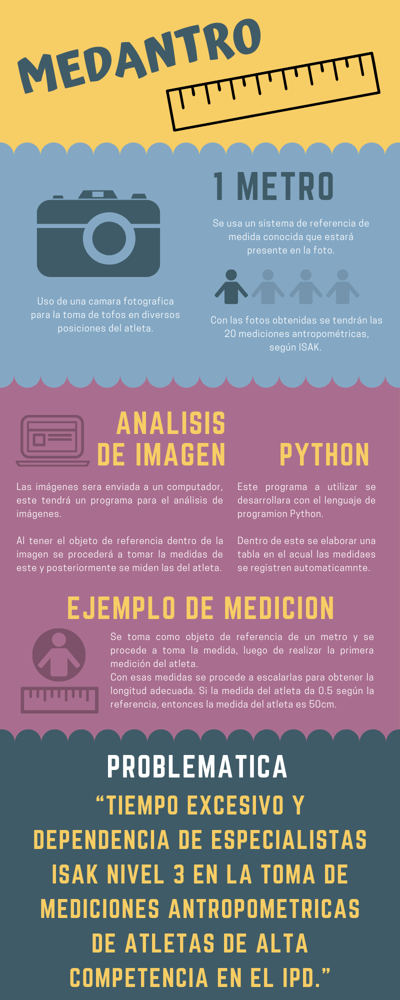

1. CONCEPTO ESCOGIDO: TOMA DE PARÁMETROS ANTROPOMÉTRICOS MEDIANTE FOTOGRAFÍAS

2. ESTRATEGIAS DE SOLUCIÓN DEL CONCEPTO ESCOGIDO
2.1. OBJETIVO
Implementación de un sistema que nos permita calcular cierta cantidad de medidas antropométricas a partir de una imagen fotográfica.
2.2. ESTRATEGIA
La estrategia de esta solución se basa en la captura de imágenes fotográficas en diferentes ángulos y disposiciones de el o los atletas. Para ello, se montará un cuarto con fondo verde, el cual estará equipado con una cámara de alta capacidad y un trípode para mayor estabilidad. Luego, esta captura, se enviará a una computadora para su procesamiento con el lenguaje de programación Python, ya que este programa tiene una función de medición de una imagen entre dos puntos, tomando como referencia un objeto de una medida predeterminada. Finalmente, las mediciones se guardarán, de forma ordenada, en una base de datos para ser entregados al especialista.
2.3. METODOLOGÍA
En primera instancia, se evaluó cuántas medidas antropométricas es capaz de calcular, ya que algunas requieren necesariamente la disposición del especialista, como lo es la medición de pliegues. Una vez que se ha establecido la cantidad de medidas antropométricas, se estimará los materiales disponibles para su uso, el espacio donde se realizarán las mediciones y todos los elementos necesarios para la implementación del sistema. Luego de esto, se procede a la programación del software calibrando cada medida para disminuir el error de precisión. Con los errores calculados se desarrollará una interfaz con el cual cualquier usuario puede interactuar, ya que este sistema va orientado a un usuario sin conocimientos de programación.
2.4. MATERIALES
- Una cámara de alta capacidad con cable USB.
- Un trípode.
- Una computadora.
- Un asistente informático